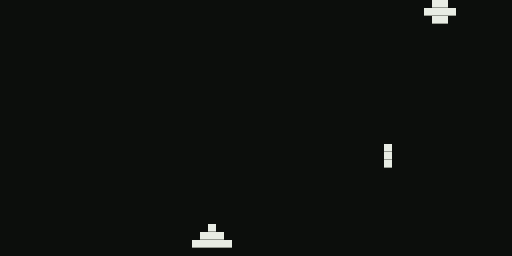

UFO Invader
P. Carson · DREAMER no. 4 (1980-12) p. 10 1K RAM


A UFO crosses the top of the screen and drops two steps closer to your base on every pass, firing rockets at random. Shoot it with the laser; a laser and a rocket that meet cancel each other. Each hit moves its starting point closer, down to the last quarter of the screen.
Keys
C left, E right, 7 fire; any key restarts.
Files
| File | Version | Load | Run |
|---|---|---|---|
| UFO Invader.c8 | main | 0200-037F | C000 |
Listing as transcribed (with notes): ufo_invader.txt
Source
DREAMER no. 4 on archive.org, p. 10 (PDF page 10). Author: P. Carson.
Corrections applied
None.
Open doubts
None.